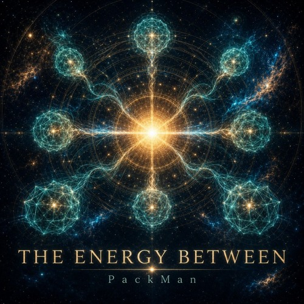

WELLENSOHN / PACKMAN
Gefühle.
Bilder.
Klang.
Elektronische Musik zwischen Atmosphäre und Bewegung. Einblicke in die Tracks, ihre Bilder und die Gedanken dahinter.
Musik entdeckenANALOG MEETS DIGITAL
DAS RELEASE-ARCHIV
Jeder Track.
Ein eigener Blick.
Cover öffnen. Geschichte entdecken.
Direkt auf SoundCloud hören.
Kein Track gefunden. Versuche ein anderes Stichwort.

TECHNIK · NATUR · KLANGHINTER DER MUSIK
WellenSohn
& PackMan.
Gefühle, Bilder und Momente sind der Ausgangspunkt. Daraus entsteht Musik zwischen ruhigen Flächen und elektronischer Energie.
Im Archiv stehen WellenSohn und PackMan nebeneinander. WellenSohn zeigt sich etwa in der Weite von „Empathy Protocol“, PackMan im Vortrieb von „Löffel“. Mit „Schmetterling“ treffen die beiden Namen in einer gemeinsamen Veröffentlichung zusammen.
Die hier versammelten Veröffentlichungen reichen bis August 2025 zurück. „Techno Times“ bringt im November den Rückblick auf Tanzen und frühere Nächte ins Archiv.
Das Spektrum wächst: von „Stunny Sunny“ und „ECO“ bis zur Folge „Sound to MY Heart“, „The Energy Between“ und „After the Flare“. Im September stehen ruhigere Stücke neben dem treibenden „Löffel“.